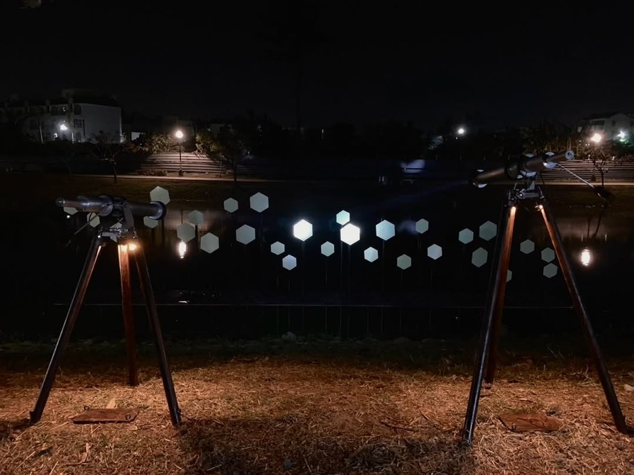
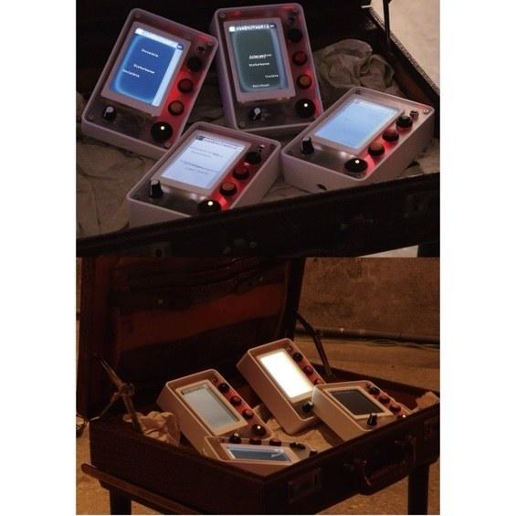
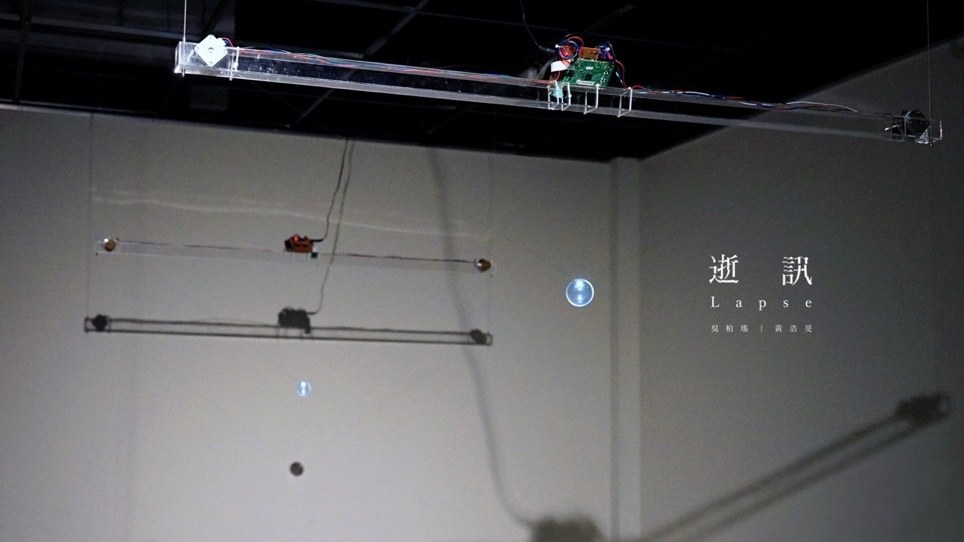
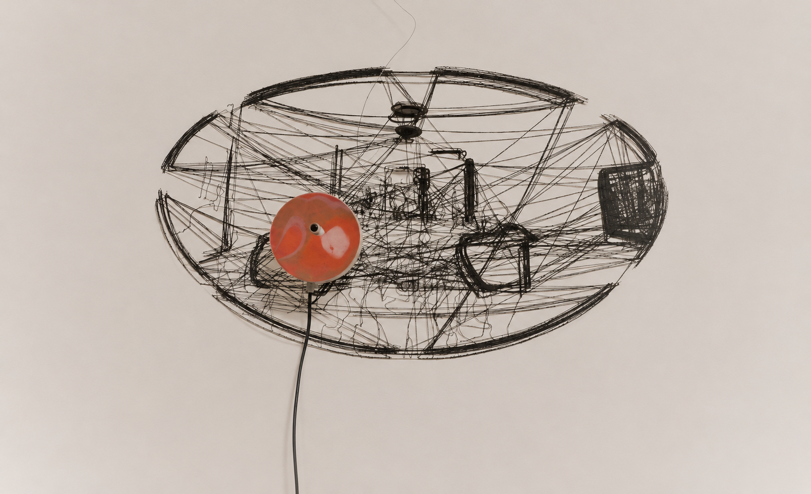
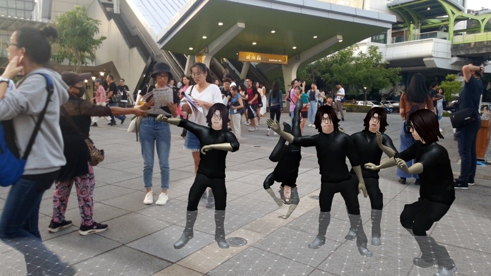

HAO-MIN HUANG / WORKS
WorksWorks
2019 — 2026 / In chronological order

Explore the LIGHT
2025 ↗
Light info
2024 ↗
The PetriDish
2021 ↗
Lapse
2019 ↗
Spatiotemporal Mirror
2019 ↗
Free Companion
2019 ↗Other works More works
- 2025 | The PetriDish: Emergence — Hao-Min Huang
- 2025 | Theremin Signa — Hao-Min Huang
- 2021 | Mutations of GUERNICA — Chia-Hsun Tsai, Hao-Min Huang
- 2019 | ATGC Mei-Guang — Chih-Chieh Huang, Chen-Hsiang Huang, Yi-Ting Ho, En-Hsin Li, Hao-Min Huang